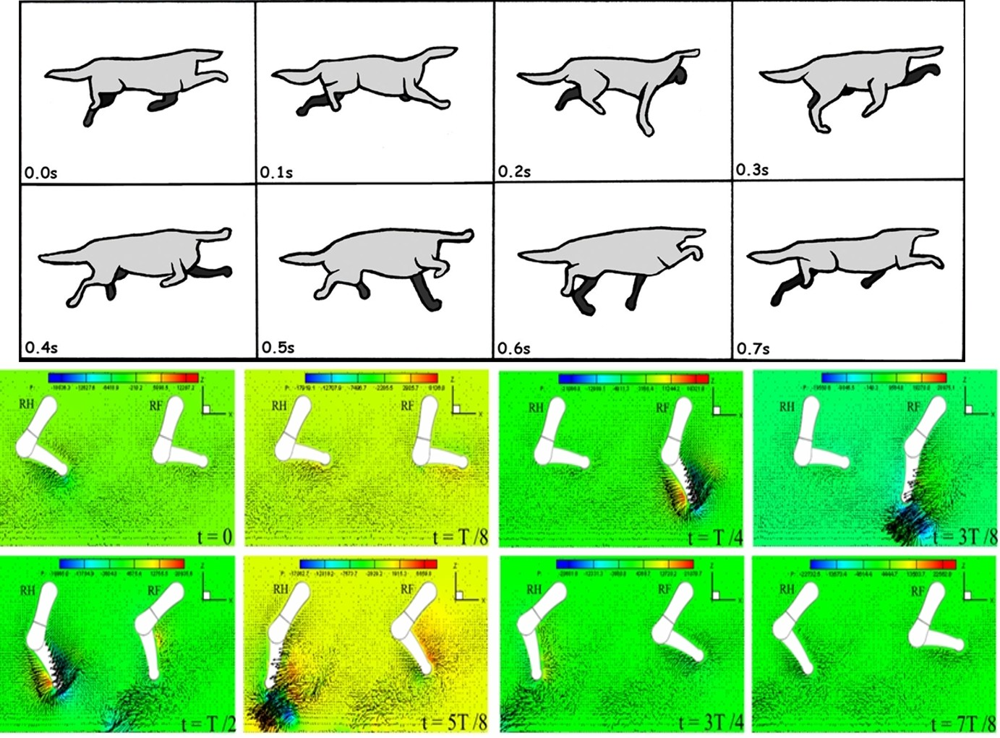

Hydrodynamics of Quadrupedal Robotic Paddling
Sep. 2023 – Jul. 2024

Overview
This project investigated the hydrodynamics of robotic paddling through computational fluid dynamics.
Hydrodynamic Analysis
The CFD study compared hydrodynamic loading, energy-related metrics, and flow-field characteristics across different paddling gaits.
Simulation and Visualization
Simulation outputs were post-processed and visualized in Tecplot to examine gait-dependent flow behavior.
My Contributions
I calculated hydrodynamic forces, power consumption, and other performance metrics for different robotic paddling gaits, compared the results across gait patterns, and used Tecplot to visualize the simulated flow fields and support the analysis.